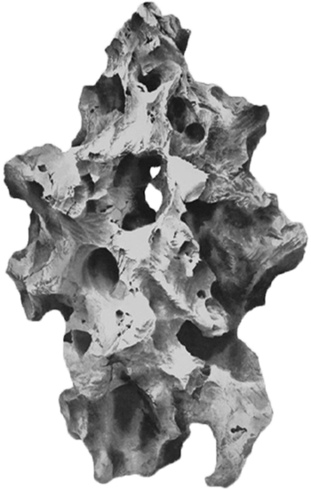

O.S.R
괴석[Oddly Shaped Rock]
In Life
In The Arts

괴 석 [ 怪 石 ]
① 모양이 이상하게 생긴 돌
② 조선시대 궁궐이나 별서 등의 원림(園林)을 조성하고 꾸미는데 사용하고, 받침돌 위에 놓기도 함
기괴하게 생긴 1m 미만의 자연석을 정원의 화계 위·담장 아래·
연못 주변·후원 등에 화훼류와 나란히 더불어 세워 조성한다